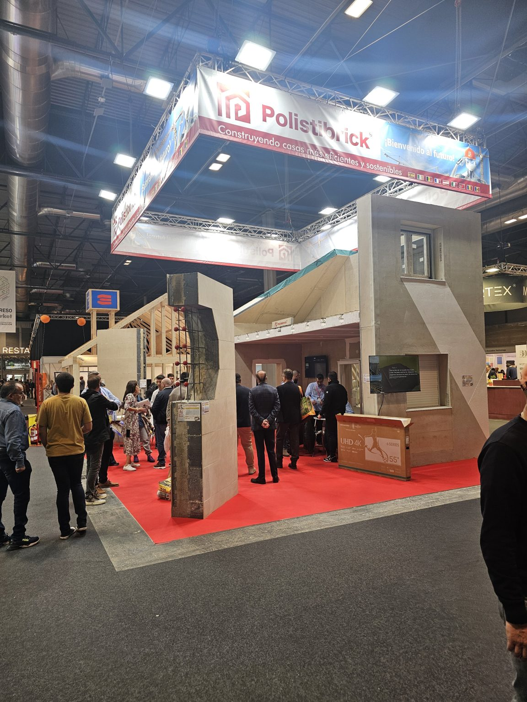
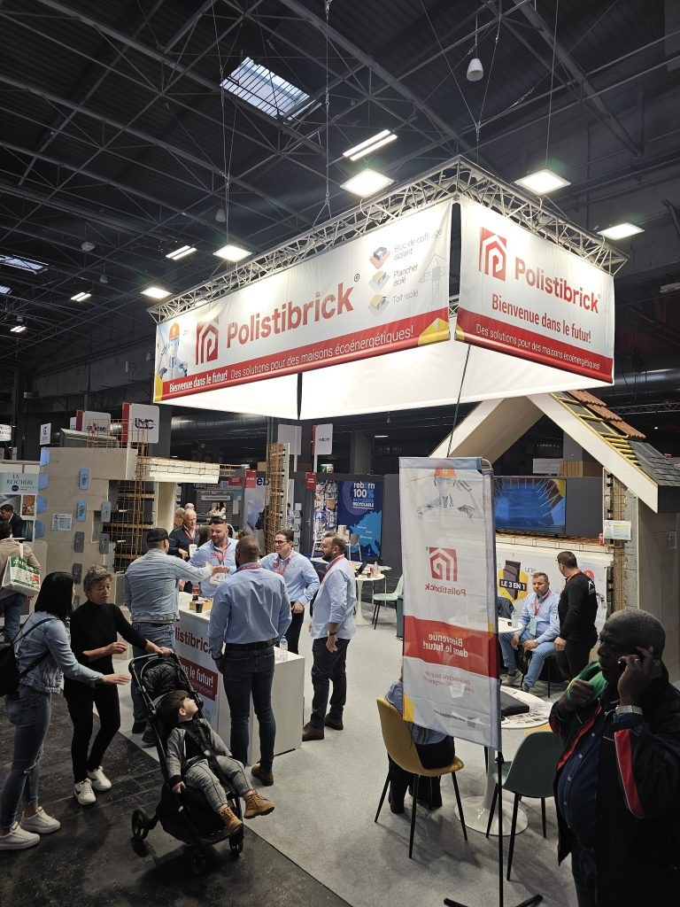
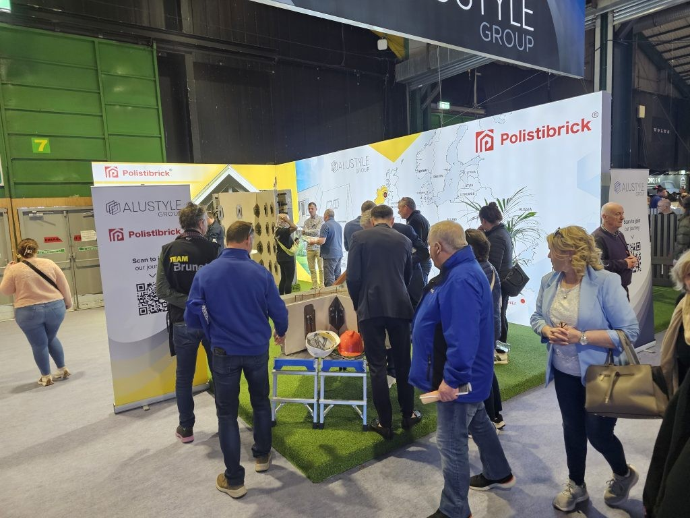
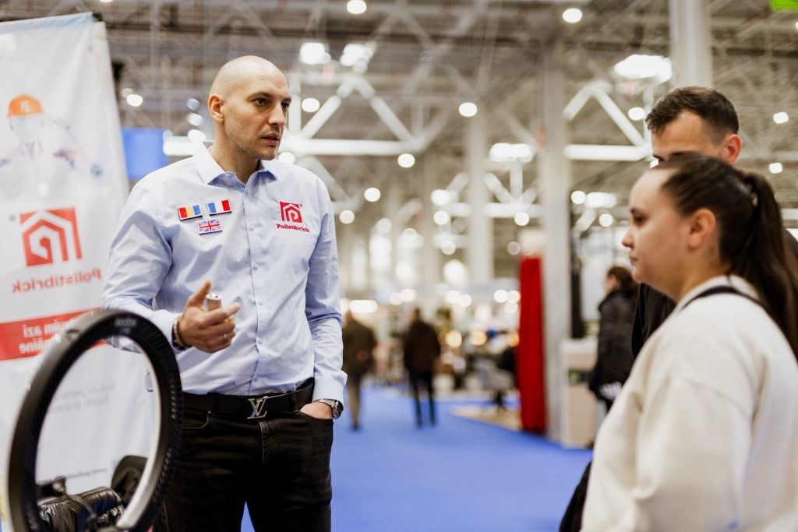
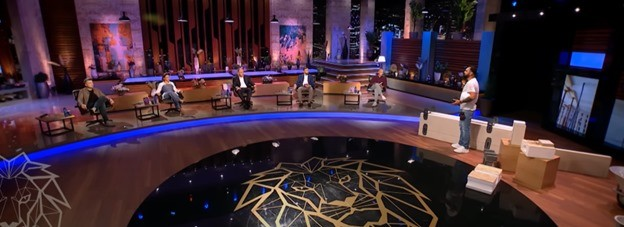

POLISTIBRICK conquiert MADRID – Le futur de la construction est arrivé !
Première présentation du système complet dans la péninsule Ibérique : murs MBK, planchers PBK et toiture TBK, avec le montage d'un mur en direct sur le stand.
Lire le communiqué →
POLISTIBRICK – Innovation et durabilité à PARIS – BATIMAT 2025
Les panneaux modulaires présentés au marché français : isolation thermique intégrée, résistance structurelle et montage rapide, sur le plus grand salon du bâtiment en France.
Lire le communiqué →
POLISTIBRICK – Innovation et efficacité au Ideal Home Show, IRLANDE – Édition 2025
Du 11 au 13 avril 2025, au RDS Simmonscourt : panneaux à plaques de fibres-ciment, démonstrations de montage et projets réalisés en Roumanie, devant le public irlandais.
Lire le communiqué →
POLISTIBRICK – Validation et innovation au CONSTRUCT-AMBIENT EXPO, Édition 2025
Du 20 au 23 mars 2025, au Pavillon B2 : modèles fonctionnels de panneaux, simulations de montage et chantiers livrés, un an après la première participation.
Lire le communiqué →
POLISTIBRICK – Participation au CONSTRUCT-AMBIENT EXPO 2024 – Le début d’une vision constructive
En mars 2024, à Bucarest, le système breveté rencontrait pour la première fois le public professionnel : architectes, ingénieurs et promoteurs.
Lire le communiqué →
Polistibrick a été présenté dans la version roumaine de l’émission “Qui Veut Être Mon Associé ?”
Le fondateur Lucian Bouleanu a obtenu un investissement de 500 000 € de la part de quatre investisseurs, devant les caméras de la télévision roumaine.
Lire le communiqué →